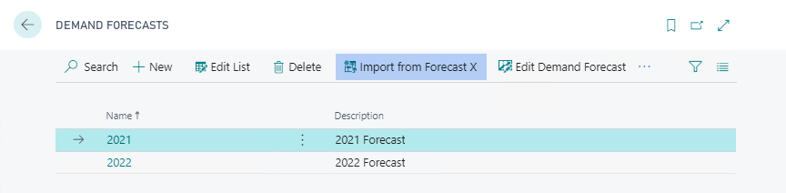
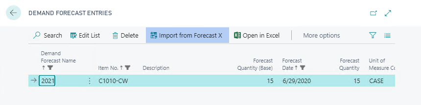
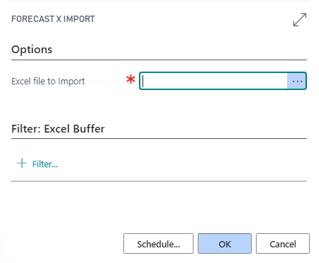

Home
/
Learn
/
Forecast X
Importing from Forecast X
3 minutes - Unit 1 of 1
Forecast X is a forecasting tool built within Excel that is built for growth and gives you unparalleled statistical power along with the infinite flexibility of Excel, while remaining incredibly easy to use.
Once the forecast has been manipulated and updated using Forecast X that data can be imported back into Business Central
Open
Demand Forecasts
, select the forecast into which you want to import the new data and click the
Import from Forecast X
action

alternatly you can run the same import from the
Demand Forecast Entries
page accessed when drilling down upon the
Demand Forecast Matrix

You will be prompted to select the Excel Spreadsheet to be imported (use the Assist Edit action) and then click OK

Module completed
< Back
Back to Modules >
×